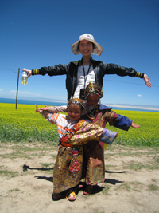

梦在前方，路在脚下
林晓霜是来自商学院人力资源管理专业的学生。2007年，她怀揣青葱理想，梦圆知识殿堂——东北师范大学。“无为守贫贱，坎坷长苦辛”，她知道梦想不会在简单的期许中实现，需要沾着汗水甚至是泪水去描摹；也知道追逐总是百转千回，今天的刻苦与担当为的是明天的无悔和从容，此刻的厉兵秣马为的是而后的厚积薄发。“全面发展，收获一个无悔的大学生活”是四年前为自己许下的诺言，四年后的今天她从容兑现，无论是学习、科研还是实践、竞赛，无论是社会工作还是文艺活动，收获了一个全面发展的自己。
做有学识的菁英
出色的完成学业是林晓霜的对自己的不变要求，自入学以来，她
做有学识的菁英
出色的完成学业是林晓霜的对自己的不变要求，自入学以来，她
的成绩稳居专业第一。“if you fail to plan ,you will plan to fail”, 她坚信制定合理的学习计划，安排好时间是实现有效学习的保证。有些同学不能有效遵守计划，觉的时间不够用，许多任务混杂在一起难以完成，这就涉及到时间管理（time management）的技巧。林晓霜认为造成时间冲突的原因有两个：同一段时间内需要做的事情太多；心情焦虑导致效率低下。这两点原因是有因果关系的，究竟如何从这种困境中突围，做出合理高效的规划？不妨把该做的事情按轻重缓急分类统筹，然后按部就班，你会发现这样省去了很多不必要的烦恼，也高效的完成了看似艰巨的任务。比如说，今天你有高数作业需要完成，有学生会的活动策划要写，明天有一个比赛要去组织。那就该分一下轻重缓急，活动策划催的很急，并且寝室11点就会准时停电，策划书的撰写自然离不开电脑，那就应该先完成受客观条件束缚最多的任务。完成策划书后，应该去自习室完成高数作业，林晓霜提倡在学习上，一定要“今日事，今日毕”，知识学习尤其强调记忆的连续性，务必当天完成，而比赛可以在第二天中午准备。因为所学专业的特性，课下林晓霜会阅读大量的专业杂志和报纸，时刻了解时事；为了解全球最新的人力资源管理动态，阅读国际一流期刊的英文论文是她不二的选择，这也为她接下来的科研项目和创业比赛夯实了基础。每当她在学业上遇到难题，主动与老师同学们交流并保持积极向上的心态，用踏实谨慎的研究态度完成每一项学习任务。
林晓霜热爱英语学习，每场研究生院的英语角都会有她的身影，她一次性通过了国家英语四、六级，考取了剑桥商务英语中级证书。商学的经典理论起源于美国和欧洲，管理学大家们的思想和经典语句都是用英文表达的，作为这门学科的学习者，学好英语就异常关键。有些同学可能会说，经典英文教材都有翻译版本，但不同学者对专业术语的翻译都是不同的，即使有了翻译也会有时间差，这样最新的专业信息还有谁来翻译呢？林晓霜举了个例子：如compensation这个词，每个人都知道是“补偿”的意思，但它在管理学中的解释真是众说纷纭，台湾学者认为是“薪酬”，而大陆学者认为是“薪资”或“报酬”，这些词语在汉语表达上都有区别，如果你不知的它的英文原意，在学习中就会把他们当成不同的术语来看待。在平时生活中，林晓霜一直保持着对美术和日语的学习激情，并已具备了基本的日语交流能力。四年来，辛勤和汗水让梦想花开，她凭着对学习的浓厚兴趣和自己的不懈努力，先后获得国家奖学金、校长奖学金、学有专长奖学金、美德风范奖学金等多项荣誉和奖励，连续三年被评为校优秀学生，三次入选校“百人团队”。2010年林晓霜以优异的成绩和出色的表现被免试保送为中国人民大学人力资源管理专业硕士研究生，现正在参与人民大学本科领导学教材的编写工作。
热爱钻研的林晓霜利用师大提供的各种平台提高科研创新水平，作为科研小组的组长，她主持了校大学生A级科研目和第三批全国大学生创新性实验计划项目，带领团队开展实地调研。随着科研项目研究的步步深入，这些困惑挥之不去：为什么长春本土超市的销售额远远比不上跨国大型零售业？西蒙提出的管理行为理论是否可以解释这一现象呢？带着这些疑问，她和她的团队开始了进一步的研究。上网查资料，请老师指导，到图书馆借阅书籍，学习数据分析软件，查阅前沿国际期刊……虽很忙碌但时有收获和惊喜，尤其在完成一个任务的时候，林晓霜有很强烈的成就感，正是这种成就感不断激励和鼓舞她继续向前。以第一作者的身份，林晓霜撰写了四篇高水平的学术论文，其中三篇发表在国家级期刊中,一篇全英文论文发表在省级期刊中。在这些科研项目中，她恪守严谨、踏实，深知“学无止尽”，要想做好科研一定要不断钻研；科研是团队合作的结果，是集体智慧的结晶。
做赛场上的精灵
作为商学院的学生，应该学以致用，更应该在实践和竞赛中提高自己的综合素质。2009年10月，林晓霜参加了平安杯第一届大学生创业计划大赛。参加创业计划大赛之初，由于从未接触过创业策划书，外加参赛经验不足，遇到了很多困难，但都被她坚韧的克服了。林晓霜以参加全国挑战杯为目标，陆陆续续为团队纳入了新鲜血液，遇到困难时她用真诚的声音鼓励大家：“我们不能让自己的实力埋没，要奋起直追，落后是不堪忍受的！”与大家共同担当。那段时间，她阅读了大量的商业策划书和创业项目，为了做出高质量的ppt和策划书她经常熬到夜深人静，因为她知道比赛拼的不仅仅是能力，更是毅力和克服苦难的坚韧。从最初的“灵越智能泊车系统”到“大学生实践交流平台”；从学校首届“惠普杯”营销策划大赛到平安杯全国大学生创业计划大赛；从吉林省第五届“挑战杯”大学生创业计划大赛到第六届全国“挑战杯”大学生创业计划大赛。这些比赛极大提高了林晓霜的应变能力和创新能力，创业项目的设计往往是专业知识、创新思维和良好的表达能力的综合体现，每一次的比赛都巩固了她的专业知识，提高了她思考的全面性，加深了她对科研和创新的认识。比赛中无论是成功还是失败，锻炼的是一个人的担当和情怀，当林晓霜获得吉林省第五届“挑战杯”大学生创业计划竞赛金奖、全国第二届平安杯励志大学生创业计划竞赛北区优秀奖、全国第六届“挑战杯”大学生创业计划竞赛铜奖时，她实现了目标，也实现了预设的自己！
2009年，林晓霜参加了第十三届“外研社杯”全国大学生英语辩论赛暨东北师范大学区的选拔赛，无论是从商学院院内选拔，还是外语学院的净月校区选拔，她都精心准备，沉着应对。在决赛中，她和搭档从容不迫、旁征博引，用流利的英语博得观众的阵阵掌声，最终取得第一名的成绩。
回想一路走来大大小小的比赛和一直以来的辛勤准备，林晓霜坚定了信心和决心，锤炼了执着的信念，做到了理想花开。
做社会工作的楷模
适应时代发展，立志成为时代栋梁就必须有“十八班武艺”，在做好科研与实践的同时，林晓霜在社会工作中也做得十分突出，踊跃参加各项社会活动。她曾先后担任商学院学生会宣传部部长、校学生会宣传部副部长、年级团支书等职务，既丰富了同学们的生活也锻炼了自己。同时，她一直积极参加志愿者活动，2010年分别在吉林省大学生招聘会和“挑战杯”吉林省大学生课外学术科技作品竞赛中担任志愿者，细心周到的服务博得了组织者的认可，也展示了东北师大学子的风采。
林晓霜作为年级干部，在发展自己的同时也带领大家共同进步，实现“共赢”。在主动与系主任沟通的基础上，她建议开展具有学院特色的人力资源管理系列讲座，并排出了讲座的日程表，由系主任和师哥师姐们对大家进行学习方法介绍和经验交流。每次她都会通知到每个年级每个寝室，安排好教室，做好讲座的记录工作。每当林晓霜看到各个年级的同学们认真听着讲座，积极与主讲人互动，探讨学习上的不足与经验，并不断进步时，她的成就感油然而生。林晓霜和班级干部们还制定出“一对一”学习计划，以乐观的心态、向上的精神感染大家。她为人力专业的每一个人绘制了肖像，极大提高了集体的凝聚力。她所在的班级，每一位同学都心怀梦想、朝气蓬勃，因此这个集体有着良好的氛围；每一个人都有明确的发展目标，并都朝着各自的目标不懈努力着；同学间相互交流，共同进步。最终她所在的班级连续两年被评为“标兵班集体”，也是学院评奖评优中获奖人数最多的集体。
“为者常成，行者常至”这句箴言，她时刻铭记。回顾大学四年，一路走来，成长的串串足迹，遭际的种种困难，林晓霜学会了从容面对，甘于担当，明白了梦虽远方，但路从脚下。这一切都源于对梦想的执着、源于老师的谆谆教诲、同学的信任支持、源于做事但求无怨无悔的信念。多少个日夜的孜孜不倦埋头书卷，多少次挫折的历练，换来了她今天的全面发展，换来了无悔的大学四年！
林晓霜热爱英语学习，每场研究生院的英语角都会有她的身影，她一次性通过了国家英语四、六级，考取了剑桥商务英语中级证书。商学的经典理论起源于美国和欧洲，管理学大家们的思想和经典语句都是用英文表达的，作为这门学科的学习者，学好英语就异常关键。有些同学可能会说，经典英文教材都有翻译版本，但不同学者对专业术语的翻译都是不同的，即使有了翻译也会有时间差，这样最新的专业信息还有谁来翻译呢？林晓霜举了个例子：如compensation这个词，每个人都知道是“补偿”的意思，但它在管理学中的解释真是众说纷纭，台湾学者认为是“薪酬”，而大陆学者认为是“薪资”或“报酬”，这些词语在汉语表达上都有区别，如果你不知的它的英文原意，在学习中就会把他们当成不同的术语来看待。在平时生活中，林晓霜一直保持着对美术和日语的学习激情，并已具备了基本的日语交流能力。四年来，辛勤和汗水让梦想花开，她凭着对学习的浓厚兴趣和自己的不懈努力，先后获得国家奖学金、校长奖学金、学有专长奖学金、美德风范奖学金等多项荣誉和奖励，连续三年被评为校优秀学生，三次入选校“百人团队”。2010年林晓霜以优异的成绩和出色的表现被免试保送为中国人民大学人力资源管理专业硕士研究生，现正在参与人民大学本科领导学教材的编写工作。
热爱钻研的林晓霜利用师大提供的各种平台提高科研创新水平，作为科研小组的组长，她主持了校大学生A级科研目和第三批全国大学生创新性实验计划项目，带领团队开展实地调研。随着科研项目研究的步步深入，这些困惑挥之不去：为什么长春本土超市的销售额远远比不上跨国大型零售业？西蒙提出的管理行为理论是否可以解释这一现象呢？带着这些疑问，她和她的团队开始了进一步的研究。上网查资料，请老师指导，到图书馆借阅书籍，学习数据分析软件，查阅前沿国际期刊……虽很忙碌但时有收获和惊喜，尤其在完成一个任务的时候，林晓霜有很强烈的成就感，正是这种成就感不断激励和鼓舞她继续向前。以第一作者的身份，林晓霜撰写了四篇高水平的学术论文，其中三篇发表在国家级期刊中,一篇全英文论文发表在省级期刊中。在这些科研项目中，她恪守严谨、踏实，深知“学无止尽”，要想做好科研一定要不断钻研；科研是团队合作的结果，是集体智慧的结晶。
做赛场上的精灵
作为商学院的学生，应该学以致用，更应该在实践和竞赛中提高自己的综合素质。2009年10月，林晓霜参加了平安杯第一届大学生创业计划大赛。参加创业计划大赛之初，由于从未接触过创业策划书，外加参赛经验不足，遇到了很多困难，但都被她坚韧的克服了。林晓霜以参加全国挑战杯为目标，陆陆续续为团队纳入了新鲜血液，遇到困难时她用真诚的声音鼓励大家：“我们不能让自己的实力埋没，要奋起直追，落后是不堪忍受的！”与大家共同担当。那段时间，她阅读了大量的商业策划书和创业项目，为了做出高质量的ppt和策划书她经常熬到夜深人静，因为她知道比赛拼的不仅仅是能力，更是毅力和克服苦难的坚韧。从最初的“灵越智能泊车系统”到“大学生实践交流平台”；从学校首届“惠普杯”营销策划大赛到平安杯全国大学生创业计划大赛；从吉林省第五届“挑战杯”大学生创业计划大赛到第六届全国“挑战杯”大学生创业计划大赛。这些比赛极大提高了林晓霜的应变能力和创新能力，创业项目的设计往往是专业知识、创新思维和良好的表达能力的综合体现，每一次的比赛都巩固了她的专业知识，提高了她思考的全面性，加深了她对科研和创新的认识。比赛中无论是成功还是失败，锻炼的是一个人的担当和情怀，当林晓霜获得吉林省第五届“挑战杯”大学生创业计划竞赛金奖、全国第二届平安杯励志大学生创业计划竞赛北区优秀奖、全国第六届“挑战杯”大学生创业计划竞赛铜奖时，她实现了目标，也实现了预设的自己！
2009年，林晓霜参加了第十三届“外研社杯”全国大学生英语辩论赛暨东北师范大学区的选拔赛，无论是从商学院院内选拔，还是外语学院的净月校区选拔，她都精心准备，沉着应对。在决赛中，她和搭档从容不迫、旁征博引，用流利的英语博得观众的阵阵掌声，最终取得第一名的成绩。
回想一路走来大大小小的比赛和一直以来的辛勤准备，林晓霜坚定了信心和决心，锤炼了执着的信念，做到了理想花开。
做社会工作的楷模
适应时代发展，立志成为时代栋梁就必须有“十八班武艺”，在做好科研与实践的同时，林晓霜在社会工作中也做得十分突出，踊跃参加各项社会活动。她曾先后担任商学院学生会宣传部部长、校学生会宣传部副部长、年级团支书等职务，既丰富了同学们的生活也锻炼了自己。同时，她一直积极参加志愿者活动，2010年分别在吉林省大学生招聘会和“挑战杯”吉林省大学生课外学术科技作品竞赛中担任志愿者，细心周到的服务博得了组织者的认可，也展示了东北师大学子的风采。
林晓霜作为年级干部，在发展自己的同时也带领大家共同进步，实现“共赢”。在主动与系主任沟通的基础上，她建议开展具有学院特色的人力资源管理系列讲座，并排出了讲座的日程表，由系主任和师哥师姐们对大家进行学习方法介绍和经验交流。每次她都会通知到每个年级每个寝室，安排好教室，做好讲座的记录工作。每当林晓霜看到各个年级的同学们认真听着讲座，积极与主讲人互动，探讨学习上的不足与经验，并不断进步时，她的成就感油然而生。林晓霜和班级干部们还制定出“一对一”学习计划，以乐观的心态、向上的精神感染大家。她为人力专业的每一个人绘制了肖像，极大提高了集体的凝聚力。她所在的班级，每一位同学都心怀梦想、朝气蓬勃，因此这个集体有着良好的氛围；每一个人都有明确的发展目标，并都朝着各自的目标不懈努力着；同学间相互交流，共同进步。最终她所在的班级连续两年被评为“标兵班集体”，也是学院评奖评优中获奖人数最多的集体。
“为者常成，行者常至”这句箴言，她时刻铭记。回顾大学四年，一路走来，成长的串串足迹，遭际的种种困难，林晓霜学会了从容面对，甘于担当，明白了梦虽远方，但路从脚下。这一切都源于对梦想的执着、源于老师的谆谆教诲、同学的信任支持、源于做事但求无怨无悔的信念。多少个日夜的孜孜不倦埋头书卷，多少次挫折的历练，换来了她今天的全面发展，换来了无悔的大学四年！